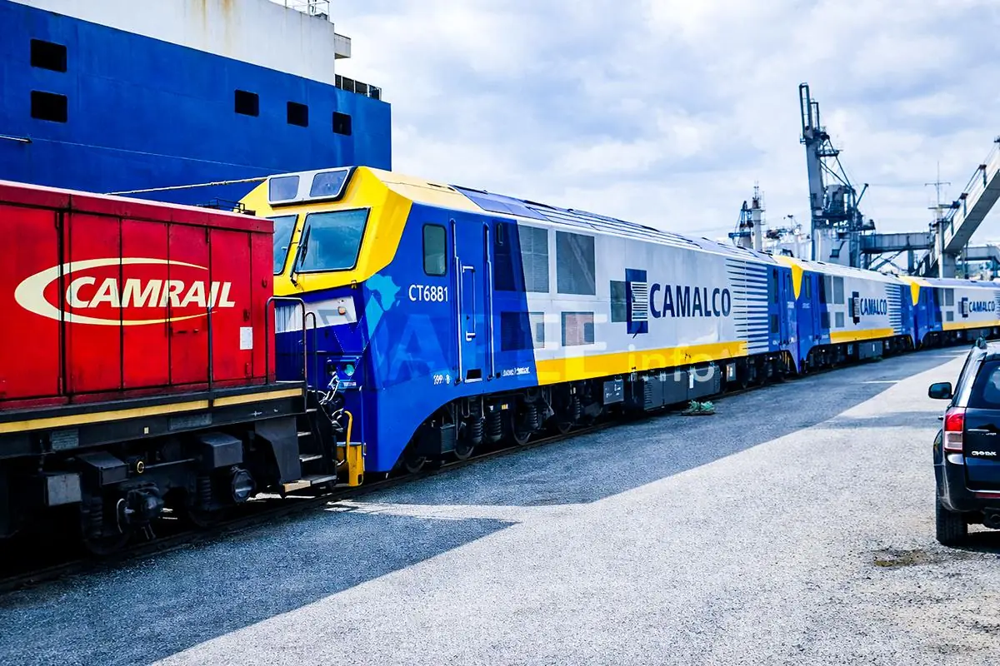
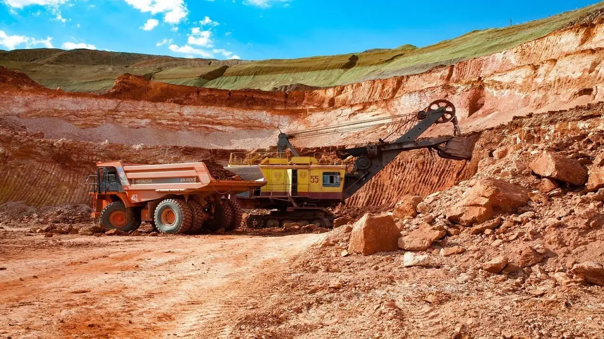
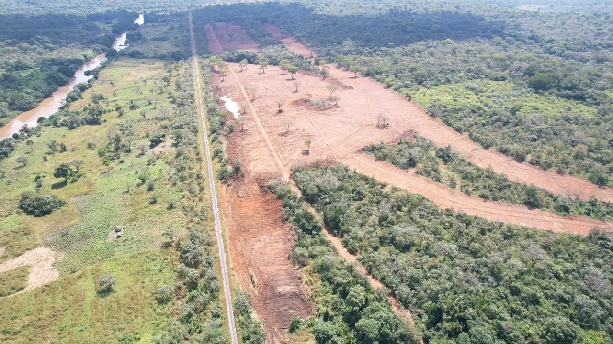

Minim-Martap : de l'espoir d'une révolution minière au bras de fer pour le contrôle de Canyon Resources
Financements avortés, OPA décotée, régulateur australien en arbitre : comment un projet minier aux perspectives considérables s'est retrouvé au cœur d'une bataille de contrôle — et ce qu'elle engage pour le Cameroun.

Photographie fournie : locomotives CAMALCO et équipements ferroviaires au port.
Présenté comme l'un des projets miniers les plus prometteurs du Cameroun, Minim-Martap devait ouvrir une nouvelle ère dans l'exploitation de la bauxite, la diversification économique et l'industrialisation nationale. Pourtant, à mesure que le projet progresse sur le terrain, son développement se retrouve au cœur d'une confrontation financière, actionnariale et réglementaire particulièrement complexe.
D'un côté, Canyon Resources, société australienne porteuse du projet, défend la valeur de son gisement et la pertinence de sa stratégie industrielle. De l'autre, A2MP, son principal actionnaire, remet en cause certaines hypothèses économiques et cherche à renforcer son contrôle sur l'entreprise.
Entre les deux, plusieurs acteurs occupent des positions déterminantes : Eagle Eye Asset Holdings, AFG Bank, Afriland First Bank, les administrateurs de Canyon, les autorités australiennes de régulation et les partenaires camerounais chargés des infrastructures.
L'échec de l'offre publique d'achat d'A2MP, en septembre 2026, n'a pas mis fin au conflit. Au contraire, les décisions ultérieures du Takeovers Panel australien ont soulevé de nouvelles interrogations sur la gouvernance, les financements et les informations communiquées aux actionnaires.
Comment un projet minier aux perspectives économiques considérables a-t-il pu se retrouver dans une telle situation ? Quels intérêts s'affrontent réellement ? Et surtout, quelles conséquences cette bataille peut-elle avoir pour le Cameroun ? Pour le comprendre, il faut retracer l'histoire du projet, depuis ses fondements géologiques jusqu'aux événements les plus récents.
- 2018 – 2024Exploration et consolidation des gisements de Minim-Martap et Ngaoundal ; études environnementales, recherche d'une solution logistique.
- 26 mai 2025Camalco Cameroon signe avec AFG Bank Cameroon un financement d'environ 140 M USD (82 Md FCFA), garanti par Canyon et A2MP.
- 1er septembre 2025Étude de faisabilité définitive : VAN après impôt de 521 M USD, TRI de 22 %.
- Sept. – oct. 2025Programme de fonds propres d'environ 215 M AUD ; première tranche de 35,6 M AUD réalisée.
- 9 mars 2026Les résolutions sur les financements Afriland et Eagle Eye échouent en assemblée générale.
- 27 juillet 2026Environ 3,72 M USD de commission de garantie réglés à A2MP.
- 29 juillet 2026A2MP lance une OPA à 0,05 AUD par action, sous le cours de la veille (0,087 AUD).
- 30 juillet 2026Lettre d'A2MP à AFG Bank sur ses intentions de financement et sa stratégie industrielle.
- 24 août 2026AFG Bank suspend les nouveaux tirages de sa facilité.
- 31 août 2026Target's Statement : le comité indépendant recommande le rejet, BDO juge l'offre ni équitable ni raisonnable.
- 21 septembre 2026L'OPA expire sans atteindre le seuil de 75 %.
- 28 octobre 2026Le Takeovers Panel déclare des circonstances inacceptables.
- 30 octobre 2026Rapport trimestriel : 125 wagons sur 160 arrivés, 7 locomotives livrées ; objectif de première expédition au T4 2026 retiré.
- 6 novembre 2026Ordonnances définitives : A2MP doit publier une déclaration corrective à l'ASX.
- 30 novembre 2026Assemblée générale de Canyon.
Minim-Martap : la promesse d'une nouvelle industrie minière camerounaise

Situé dans la région de l'Adamaoua, le projet Minim-Martap repose sur d'importantes ressources de bauxite, minerai principalement utilisé pour produire l'alumine, elle-même destinée à la fabrication de l'aluminium.
La qualité du minerai constitue l'un des principaux atouts du projet. Les études mettent en évidence des teneurs élevées en alumine et des teneurs relativement faibles en silice réactive, caractéristiques recherchées par les raffineries.
Pour Canyon Resources, Minim-Martap représente ainsi bien davantage qu'une simple mine : il s'agit d'un actif susceptible d'alimenter durablement le marché international de la bauxite et, à terme, de soutenir une industrie de transformation au Cameroun.
Une ambition en plusieurs étapes
Le modèle de développement initial privilégie l'extraction et l'exportation de bauxite, avant une éventuelle montée en puissance industrielle. Cette approche repose sur trois éléments interdépendants : la mine, le chemin de fer et les installations portuaires.
Le minerai extrait dans l'Adamaoua doit être transporté jusqu'à une plateforme ferroviaire, acheminé vers Douala, puis chargé sur des navires à destination des clients internationaux. Cette organisation implique des investissements considérables dans les routes, les wagons, les locomotives, les installations de stockage et les équipements portuaires.
Elle crée également une dépendance importante à l'égard des performances du corridor logistique. La qualité exceptionnelle d'un gisement ne garantit pas, à elle seule, sa rentabilité : encore faut-il pouvoir transporter et commercialiser son minerai à un coût compétitif.
C'est précisément sur cette question que les divergences entre Canyon et A2MP prendront une importance déterminante.
De la valorisation géologique à la structuration industrielle : les grandes étapes du projet

Le développement de Minim-Martap ne commence évidemment pas avec le conflit actionnarial de 2026. Il résulte de plusieurs années de travaux d'exploration, de consolidation des ressources, d'études techniques et de négociations avec les autorités camerounaises.
2018–2024 : la constitution d'un projet minier d'envergure
Canyon Resources s'engage progressivement dans l'exploration et la valorisation des gisements de bauxite de Minim-Martap et Ngaoundal. Les campagnes géologiques confirment l'existence de ressources importantes, avec des caractéristiques permettant d'envisager une exploitation industrielle à grande échelle.
Au fil des années, la société travaille à la définition du périmètre minier, à la préparation des autorisations nécessaires, aux études environnementales et à la recherche d'une solution logistique. La perspective d'utiliser les infrastructures ferroviaires et portuaires existantes devient un élément central du modèle économique.
2025 : l'année de la concrétisation
L'année 2025 marque un tournant. Le 26 mai, Canyon annonce la conclusion, par sa filiale Camalco Cameroon, d'un accord de financement avec AFG Bank Cameroon portant sur environ 140 millions USD, soit 82 milliards FCFA. Ce financement est destiné à soutenir le développement de Minim-Martap, notamment l'acquisition de matériels ferroviaires et la construction d'infrastructures. L'accord est garanti conjointement par Canyon et A2MP.
Le 1er septembre 2025, Canyon publie son étude de faisabilité définitive (Definitive Feasibility Study, DFS), document de référence présentant les hypothèses de production, les investissements, les coûts d'exploitation et la rentabilité attendue du projet.
Un modèle économique prometteur, mais exigeant
Indicateurs du scénario de référence présenté par Canyon. Ils correspondent à des projections financières, et non à des bénéfices déjà réalisés.
Ces résultats confortent l'ambition de Canyon. Ils reposent néanmoins sur des hypothèses de prix de vente, de volumes, de coûts de transport et de calendrier de financement. C'est précisément la sensibilité de ces paramètres qui deviendra le cœur du conflit avec A2MP.
L'entrée des grands investisseurs et la bataille du financement
En septembre 2025, Canyon présente un programme de financement en fonds propres d'environ 215 millions AUD, combinant une augmentation de capital et l'exercice d'options par Eagle Eye Asset Holdings. Une première tranche de 35,6 millions AUD est réalisée en octobre, tandis qu'Eagle Eye apporte environ 9,6 millions AUD supplémentaires par l'exercice d'options.
La deuxième tranche devait notamment comprendre :
- 70 millions AUD apportés par Afriland Bourse & Investissement, filiale du groupe Afriland First Bank ;
- 100 millions AUD apportés par Eagle Eye Asset Holdings.
Ces deux investissements étaient envisagés à 0,26 AUD par action. Ce prix est particulièrement intéressant rétrospectivement : quelques mois plus tard, A2MP proposera de racheter les actions restantes de Canyon à seulement 0,05 AUD, soit un prix inférieur d'environ 81 % à celui des augmentations de capital envisagées.
Il serait toutefois trompeur de comparer ces prix sans tenir compte de l'évolution du risque, du financement et de la situation de Canyon entre les deux dates.
Mars 2026 : le premier grand point de rupture
Le 9 mars 2026, Canyon organise une assemblée générale destinée notamment à renouveler l'approbation du placement Afriland, dont la réalisation avait pris du retard en raison des autorisations réglementaires. Les résolutions relatives aux deux financements échouent.
Le Takeovers Panel établira ensuite qu'Eagle Eye n'avait pas correctement enregistré sa procuration favorable au financement Afriland. Le régulateur examinera également la décision de ne pas reporter l'assemblée pour permettre la régularisation de ce vote.
Ce qui aurait pu apparaître comme un simple incident de procédure prend une dimension particulière lorsqu'on considère les événements suivants : l'échec du financement, la détérioration des perspectives financières de Canyon, puis l'OPA lancée par A2MP.
A2MP, Eagle Eye et les Gupta : comprendre les rapports de pouvoir
La structure actionnariale constitue l'une des clés de compréhension du dossier. Selon le Takeovers Panel, A2MP est une société appartenant à un groupe d'investissement minier établi à Dubaï. Eagle Eye Asset Holdings, société constituée à Singapour, détient 97,3 % d'A2MP. A2MP et ses associés disposent de 55,56 % des droits de vote de Canyon.
Le régulateur précise également que le bénéficiaire effectif ultime d'A2MP et d'Eagle Eye est le frère de Gaurav Gupta, administrateur à la fois d'A2MP et de Canyon.
Cette configuration soulève une question essentielle : pourquoi un investisseur détenant déjà la majorité des droits de vote de Canyon chercherait-il à acquérir les actions restantes ?
La réponse tient à la différence entre majorité actionnariale et maîtrise complète d'une entreprise. Un actionnaire majoritaire peut peser sur les votes ordinaires, mais il ne peut pas nécessairement imposer toutes les décisions du conseil, supprimer les obligations envers les minoritaires ou faire adopter seul certaines résolutions exigeant une majorité renforcée.
En obtenant au moins 75 % des droits de vote, A2MP aurait sensiblement consolidé sa capacité d'influence sur la structure et l'avenir de Canyon. Le conflit dépasse donc la simple question du rendement financier d'un investissement. Il concerne aussi le pouvoir de décider du modèle industriel, des partenaires, du financement et de l'avenir de Minim-Martap.
Juillet 2026 : A2MP lance son offensive à 0,05 AUD par action
Le 29 juillet 2026, A2MP annonce une offre publique d'achat hors marché visant toutes les actions de Canyon qu'elle ne détient pas déjà. Le prix proposé est fixé à 0,05 AUD par action.
La veille, le titre Canyon avait clôturé à 0,087 AUD. L'offre présente donc une décote d'environ 42,5 % par rapport au dernier cours de Bourse. Cette caractéristique est inhabituelle : une offre destinée à convaincre les actionnaires de céder leurs titres comporte généralement une prime sur le cours de marché, même si des exceptions existent.
A2MP justifie sa proposition par la détérioration de la situation financière de Canyon, le retard de production et l'incertitude entourant les besoins de financement. Elle considère que Minim-Martap n'est plus viable à court et moyen terme dans sa configuration financière et opérationnelle existante.
Deux visions économiques opposées
A2MP ne remet pas nécessairement en cause la qualité géologique du gisement. Ses objections portent principalement sur la possibilité de développer ce gisement de manière rentable. Elle estime notamment que certaines hypothèses de l'étude de faisabilité sont trop optimistes.
Prime de qualité
Fret maritime
La réduction de la prime de qualité et l'augmentation des coûts de transport dégradent fortement les revenus nets théoriques du projet. À titre illustratif :
A2MP en déduit que les flux financiers pourraient être insuffisants pour assurer le service de la dette. Canyon conteste cette lecture et défend la valeur économique du projet, notamment en raison de la qualité du minerai et des possibilités d'optimisation logistique.
La divergence ne porte donc pas seulement sur la valeur du gisement, mais sur les hypothèses qui permettront de transformer cette valeur en revenus effectivement encaissés.
Août–septembre 2026 : le financement bancaire se bloque et Canyon organise sa défense
Le 24 août 2026, Canyon annonce qu'AFG Bank a suspendu les nouveaux tirages de sa facilité de financement. La banque demande une réévaluation du calendrier, du modèle financier et d'autres paramètres du projet, ainsi qu'une visite du site.
Cette décision constitue un choc pour Canyon, dont la stratégie repose en partie sur la disponibilité de ces fonds.
Le 31 août : Canyon riposte avec une expertise indépendante
Canyon publie son Target's Statement, document par lequel une société visée par une OPA présente aux actionnaires sa position sur l'offre. Le comité indépendant recommande unanimement de rejeter la proposition d'A2MP. Son avis s'appuie sur le rapport de BDO, qui conclut que l'offre n'est ni équitable ni raisonnable.
La valeur privilégiée de 0,32 AUD représente 6,4 fois le prix proposé par A2MP. Il s'agit d'une estimation d'expert, pas d'un prix de vente garanti. A2MP réplique le 2 septembre en contestant les hypothèses financières sous-jacentes à cette valorisation.
La bataille devient alors une confrontation entre deux lectures : d'un côté, la valeur potentielle du patrimoine minier de Canyon ; de l'autre, les risques de financement et d'exécution nécessaires pour concrétiser cette valeur.
Le 21 septembre : l'OPA échoue
A2MP n'atteint pas la condition minimale de 75 % et son offre expire. Cet échec ne signifie pas que les actionnaires ont validé la valorisation de BDO. Il signifie que l'offre d'A2MP n'a pas obtenu le niveau d'acceptation nécessaire à sa réussite.
A2MP demeure néanmoins le bloc actionnarial dominant. La tentative de rachat s'achève, mais le conflit sur la gouvernance et le financement reste entier.
Octobre–novembre 2026 : les décisions du régulateur changent la dimension de l'affaire
Le 28 octobre, le Takeovers Panel australien rend une déclaration de circonstances inacceptables concernant le déroulement de l'OPA. Le régulateur identifie notamment :
- des insuffisances dans les informations communiquées par A2MP ;
- des problèmes liés à l'utilisation d'informations confidentielles de Canyon ;
- une combinaison de circonstances susceptibles d'exercer une pression sur les actionnaires minoritaires.
Le 6 novembre, il adopte des ordonnances définitives imposant à A2MP de préparer une déclaration corrective destinée à être publiée à l'ASX.
Une correspondance à AFG Bank devient centrale
L'une des principales questions concerne une lettre adressée par A2MP à AFG Bank le 30 juillet 2026 — le lendemain de l'annonce de l'OPA. Selon les éléments examinés, A2MP y présentait des intentions de financement et une stratégie industrielle qui n'avaient pas été suffisamment expliquées aux actionnaires dans les documents de l'OPA.
Cette stratégie évoquait notamment l'utilisation de la bauxite de Canyon pour alimenter une future raffinerie d'alumine, dans une perspective d'intégration industrielle au Cameroun.
Le régulateur exige qu'A2MP précise ses intentions à la date de l'offre et fournisse les informations nécessaires pour éviter toute confusion sur ses intentions actuelles. Il demande également des explications sur les hypothèses économiques révisées par A2MP et sur l'utilisation des informations confidentielles de Canyon par ses conseillers financiers.
Les intérêts financiers d'A2MP : au-delà de sa participation au capital
Un autre élément mérite une attention particulière : A2MP n'est pas seulement actionnaire majoritaire de Canyon. Elle intervient également comme co-garante du financement AFG Bank. Cette garantie donne lieu à une rémunération.
Source : Canyon Resources, rapport annuel 2026.
La rémunération d'une garantie est une pratique financière courante : le garant accepte un risque et reçoit une commission en contrepartie. Mais, dans ce dossier, elle illustre l'imbrication des intérêts d'A2MP, qui est à la fois investisseur, actionnaire majoritaire, co-garant rémunéré et acteur ayant cherché à acquérir davantage de contrôle.
Cela ne démontre pas une faute. En revanche, cela justifie d'examiner attentivement les conventions de garantie, les droits du garant et les éventuels conflits d'intérêts liés aux décisions de financement.
Malgré le conflit, Minim-Martap continue de prendre forme au Cameroun
L'une des caractéristiques les plus frappantes de cette affaire est le contraste entre les difficultés financières et la progression physique des infrastructures. Dans son rapport trimestriel publié le 30 octobre 2026, Canyon confirme plusieurs avancées.
Source : Canyon Resources, rapport trimestriel du 30 octobre 2026. Les 125 wagons ont été livrés après la clôture du trimestre de septembre.
La route reliant la mine au terminal ferroviaire approche également de son achèvement. En revanche, les installations de transbordement et les solutions de dragage portuaire restent à finaliser.
Canyon a donc retiré son objectif de première expédition au quatrième trimestre 2026, sans annoncer de nouvelle date ferme. Cette situation montre que le projet n'est pas abandonné, mais qu'il ne dispose pas encore de toutes les conditions nécessaires à son exploitation commerciale.
L'enjeu du corridor ferroviaire et portuaire
Les participations annoncées de Camalco dans Camrail et le Terminal Bois de Douala s'inscrivent dans une logique d'intégration logistique. Elles peuvent permettre de mieux coordonner certains maillons de la chaîne d'exportation, sans pour autant garantir la disponibilité de toutes les capacités ferroviaires et portuaires requises.
Pour Minim-Martap, le corridor logistique ne constitue pas une infrastructure secondaire : il est l'une des principales variables de rentabilité du projet. Le coût du transport, les capacités de chargement, la disponibilité des wagons et les investissements portuaires détermineront une partie de la compétitivité de la bauxite camerounaise.
Sabotage, opportunisme financier ou véritable désaccord industriel ?
C'est probablement la question la plus sensible de toute cette affaire. Les événements successifs nourrissent des interrogations légitimes : échec des financements en mars, suspension bancaire en août, OPA fortement décotée, informations jugées insuffisantes par le régulateur et stratégie industrielle d'A2MP révélée plus précisément au cours de la procédure.
Il serait néanmoins imprudent de transformer automatiquement cette succession en preuve d'un plan délibéré. Trois interprétations restent possibles.
A2MP considère que Canyon a construit son projet sur des hypothèses trop optimistes et qu'une restructuration est nécessaire pour garantir sa viabilité.
Documentée par les prises de position économiques d'A2MP ; sa volonté de renforcer son contrôle est également établie par l'OPA.
A2MP croit au potentiel industriel de Minim-Martap, mais cherche à profiter des difficultés financières de Canyon pour accroître sa participation à un prix avantageux.
Hypothèse cohérente avec plusieurs éléments du dossier.
Certaines décisions auraient été prises ou influencées dans le but d'aggraver la vulnérabilité financière de Canyon, afin de faciliter son acquisition.
Plus grave, elle exige encore des preuves établissant une intention et un lien causal entre les décisions contestées et la dégradation financière de Canyon.
Une distinction est particulièrement importante : vouloir affaiblir Canyon comme société indépendante n'est pas nécessairement vouloir détruire Minim-Martap comme projet industriel.
Un investisseur peut avoir intérêt à la réussite future d'une mine tout en cherchant à en acquérir le contrôle dans les conditions financières les plus favorables. Cette possibilité explique une partie du paradoxe apparent du dossier.
Les enjeux stratégiques pour le Cameroun
Le Cameroun ne peut pas réduire Minim-Martap à un conflit entre actionnaires d'une société australienne. Le gisement est situé sur son territoire. Les infrastructures mobilisent des capacités nationales. Les emplois, les recettes publiques, les impacts environnementaux et les perspectives industrielles concernent directement son économie.
L'intérêt national exige donc une lecture indépendante des intérêts particuliers de Canyon et d'A2MP.
Cinq priorités se dégagent
- Sécuriser un financement crédible. Il faut distinguer les annonces d'intention, les engagements conditionnels et les financements effectivement mobilisables.
- Garantir l'achèvement du corridor logistique. Les investissements miniers n'auront leur pleine valeur économique que si le minerai peut être transporté et exporté de manière compétitive.
- Préserver la continuité industrielle. Les conflits entre actionnaires ne devraient pas compromettre durablement l'exécution des obligations attachées au projet.
- Clarifier les engagements de transformation locale. Une raffinerie d'alumine représente une perspective stratégique, mais elle suppose une étude de faisabilité, des capitaux importants, de l'énergie compétitive et un calendrier industriel réaliste.
- Renforcer la transparence institutionnelle. Les autorités camerounaises ont intérêt à disposer d'une information actualisée sur les financements, les garanties, les obligations des investisseurs et les étapes opérationnelles.
Une question de souveraineté économique
La souveraineté ne se mesure pas uniquement à la propriété juridique d'un gisement. Elle dépend aussi de la capacité d'un État à organiser sa valorisation, à contrôler les obligations des investisseurs, à développer les infrastructures nécessaires et à obtenir une part durable de la valeur créée.
Où en est le projet au 11 novembre 2026 ?
| Domaine | Situation documentée | État |
|---|---|---|
| OPA d'A2MP | Expirée le 21 septembre 2026 | Close |
| Participation d'A2MP et associés | Référence de 55,56 % ; déclaration du 11 novembre à examiner | À examiner |
| Conseil indépendant | Recommandation de rejet | Acté |
| Takeovers Panel | Ordonnances correctives du 6 novembre | En cours |
| Financement AFG Bank | Nouveaux décaissements suspendus | Bloqué |
| Financements alternatifs | Discussions, sans nouvel accord ferme vérifié | Incertain |
| Infrastructures | Progrès ferroviaires et routiers ; port à finaliser | En progrès |
| Première expédition | Aucune date ferme confirmée | Sans date |
| Gouvernance | Assemblée générale prévue le 30 novembre 2026 | Échéance |
La déclaration corrective exigée d'A2MP est désormais l'une des pièces les plus attendues. Elle pourrait apporter des précisions sur les intentions financières et industrielles de l'investisseur, mais aussi sur les hypothèses ayant conduit à son offre de 0,05 AUD.
Conclusion — Minim-Martap, un projet qui doit dépasser la bataille de ses actionnaires
L'histoire récente de Minim-Martap révèle un paradoxe. Rarement le projet n'aura disposé d'autant d'infrastructures physiques en cours de réalisation, et pourtant son calendrier commercial demeure incertain.
Les locomotives sont arrivées. Une grande partie des wagons est disponible. Les travaux routiers ont progressé. Les perspectives géologiques restent considérables. Mais les financements ne sont pas entièrement sécurisés, les solutions portuaires restent à finaliser et la gouvernance de Canyon demeure traversée par des intérêts divergents.
L'échec de l'OPA d'A2MP n'a donc pas réglé la question fondamentale. Le Takeovers Panel a désormais établi des insuffisances dans les informations communiquées pendant cette tentative de prise de contrôle. Ses décisions renforcent les interrogations sur les conditions dans lesquelles A2MP a cherché à accroître son pouvoir sur Canyon. Elles ne démontrent cependant pas, à ce stade, l'existence d'un plan concerté visant à saboter industriellement Minim-Martap.
La question centrale demeure celle des intentions, des moyens financiers et des capacités d'exécution de chaque acteur. A2MP veut-elle principalement corriger un modèle économique qu'elle juge défaillant, ou cherche-t-elle à imposer son propre contrôle sur un actif dont elle reconnaît le potentiel ? Canyon peut-elle sécuriser les ressources nécessaires pour poursuivre sa stratégie indépendamment des ambitions de son actionnaire majoritaire ?
Ces questions devront être tranchées par les documents, les engagements financiers et les actes, plutôt que par les déclarations seules.
DOCUMENTS DE RÉFÉRENCE
- Takeovers Panel — déclaration du 28 octobre 2026
- Takeovers Panel — ordonnances définitives du 6 novembre 2026
- Canyon Resources — rapport annuel 2026
- Canyon Resources — rapport trimestriel du 30 octobre 2026
- Historique des annonces ASX de Canyon Resources
- Business in Cameroon — engagements d'A2MP envers AFG Bank